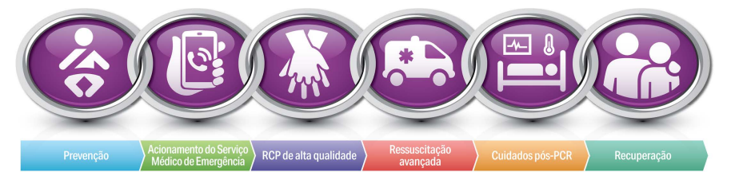

Qualidade da RCP
- Comprima com força (2 ⅓ do diâmetro torácico anteroposterior)
e rapidez (de 100 a 120/min) e aguarde o retorno total do tórax
- Minimize as interrupções nas compressões
- Alterne os responsáveis pelas compressões a cada 2 minutos ou antes, em caso de cansaço
- Se estiver sem via aérea avançada, relação compressão-ventilação de 15:2
- Se tiver via aérea avançada, administre compressões contínuas e uma ventilação a cada 2 a 3 segundos
